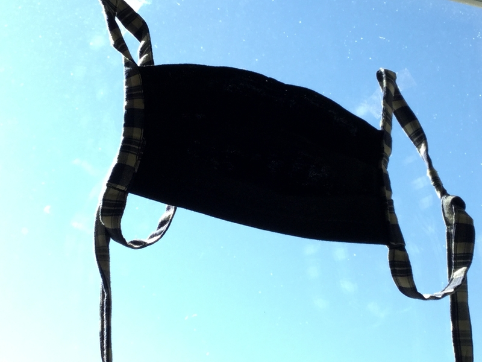

April 2020
At the beginning of the SARS-CoV-2 related stay-home-order I was looking for something to engage in other than siting on the couch. And since I am somewhat decently able to sew (which was actually my first job as a young adult), it was obvious that sewing masks could be a thing.
I found a charity that would happily take masks from me, Jenny de la Torre Stiftung, who does basic medical service for homeless people.
But after sewing a few masks, I remembered that I actually don’t like sewing and felt the need to entertain myself intellctually. It was an incentive to optimize things, what would be the best combination of aspects of self-made face masks for sewing and use? I could use my knowledge about the process of sewing and pros and cons regarding face mask features and my overall good understanding of three-dimensional things to to judge what kind of mask has the over all least disadvantages.
And once I was there I set up a github pages site and published my instruction. The website also includes an earlier mask type of mine and a mask sewing instruction of D_70WN in German and English (mine are German only).
Obviously what is good and what isn't is subjectice, other people
decided similar questions differently, based on their
mask-wearing-preferences, aesthetic preferences and sewing-process
likes and dislikes. I had conversations with other people who sew face
masks and we assembled a
table of aspects of self-made face masks and their pros and
cons.
Except for sewing-laziness the motivation for my decisions were that I
wanted a robust and no-fuss mask that I could go jogging with and I
wanted to give others masks of a similar standard. A difference though
was that the Jenny-de-la-Torre-Stiftung wanted masks without threads
for easier cleaning and so they got masks without threads.
Text last updated: May 28th 2020